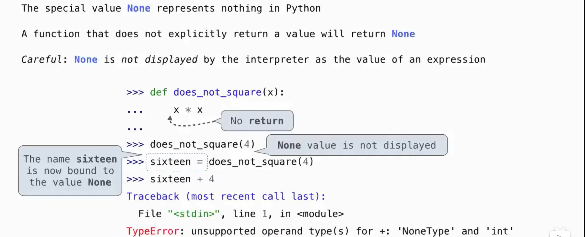
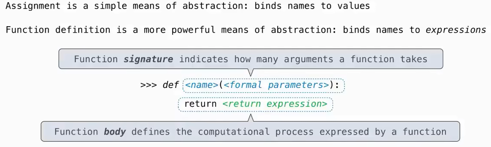
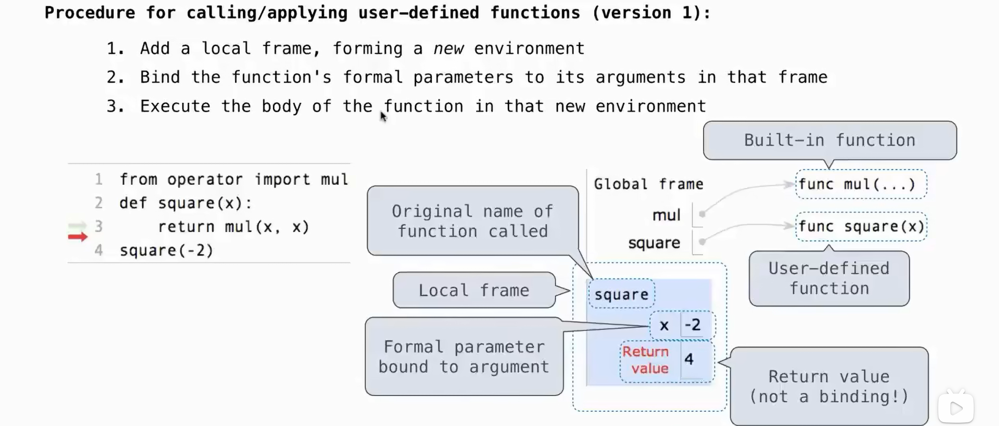
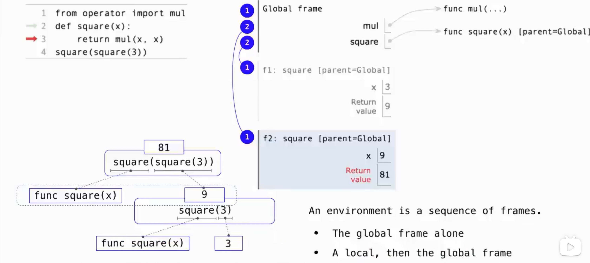
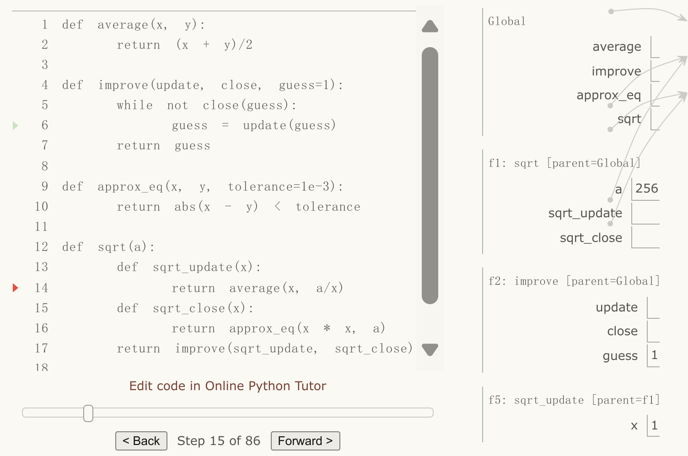
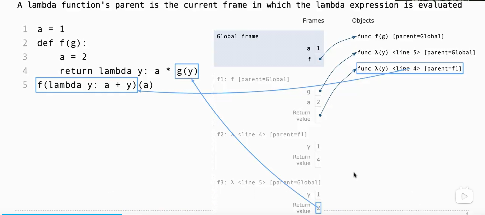

Chap1
Chapter 1: Building Abstractions with Functions¶
1.1 Getting Started¶
Introduction¶
Statements & Expressions Functions Functions encapsulate logic that manipulates data Objects An object seamlessly bundles together data and the logic that manipulates that data Interpreters Evaluating compound expressions requires a precise procedure that interprets code in a predictable way. A program that implements such a procedure, evaluating compound expressions, is called an interpreter.
functions are objects, objects are functions, and interpreters are instances of both
Errors¶
Test incrementally Isolate errors Check your assumptions
Types of Errors¶
intepreter shows the line where the problem first detected, not necessarily the line needed to be updated! - syntax errors - runtime errors Traceback - logic / behavior errors: can't be deteced by the inrepreter
1.2 Elements of Programming¶
Methchanisms¶
primitive expressions and statements, which represent the simplest building blocks that the language provides means of combination, by which compound elements are built from simpler ones means of abstraction, by which compound elements can be named and manipulated as units.
Expressions¶
Primitive expressions¶
Numbers combined with mathematical operators
Call Expressions¶
subexpressions: the operator is an expression that precedes parentheses, which enclose a comma-delimited list of operand expressions. operator :function operands :parameter
intepreter procedure: 1. find the value of operator & operands 2. apply the function to the parameters
Nested Expressions¶
recursive in nature expression tree What we need to evaluate are not call expressions, but primitive expressions such as numerals (e.g., 2) and names (e.g.add).
Library Functions¶
import statements
Names¶
bind name to value / function¶
- assignment statement
- import statement
- function definition
Both def statements and assignment statements bind names to values, and any existing bindings are lost
All expressions to the right of = are evaluated before any names to the left are bound to those values.
Environment¶
memory that keeps track of the names, values, and bindings An environment consists of a sequence of frames Each frame contains bindings - 1 global frame - local frames - ...
1.3 Function¶
Type¶
Pure functions Functions have some input (their arguments) and return some output (the result of applying them). Non-pure functions In addition to returning a value, applying a non-pure function can generate side effects, which make some change to the state of the interpreter or computer. The value that print returns is always None
about None:

Name¶
- intrinsic name
- bound name
Component¶

Function Signatures
A description of the formal parameters
all built-in functions will be rendered as <name>(...), because these
primitive functions were never explicitly defined.
Calling User-Defined Functions¶

nested calling

⚠️the inside square is called before the outside square , its frame being built earlier too
(remember the logic of call expression!!!)
What we need to evaluate are not call expressions, but primitive expressions such as numerals (e.g., 2) and names (e.g.add).
Name Evaluation - parameter: the meaning of a function should be independent of the parameter names chosen by its author → the parameter names of a function must remain local to the body of the function. only 2 approaches: 1.passed -> 2. Default Argument Values
```py
def pirate(arggg): #this parameter is never used
def plunder(arggg):
return arggg # plunder is identity function
return plunder
```
```bash
>>>pirate(pirate(pirate))(3)
3 # regardless of the parameter, the return value of pirate is identity function
```
the `arggg` in plunder can't be fetched from pirate since it's a parameter!!!
- var in body: LEGB (Local → Enclosing → Global → Built-in)
Functions as Abstractions¶
relies only on the relationship between its input arguments and its output values (& side effects). "black box"
Aspects of a functional abstraction¶
- domain: arguments
- range: return value
- intent: relationship between inputs and output (& side effects)
Operators¶
short-hand for call expressions
e.g
/: truediv
//: floordiv
%: mod
1.4 Designing Functions¶
Principle¶
- exactly one job
- Don't repeat yourself
- defined generally
Documentation¶
docstring: documentation describing the function - indented along with the function body. - triple quoted - first line describes the job of the function in one line - following lines describe arguments and clarify the behavior of the function
1.5 Control¶
Statements¶
Statements govern the relationship among different expressions in a program and what happens to their results.
Expressions can also be executed as statements, in which case they are evaluated, but their value is discarded
Control statements control the flow of a program's execution based on the results of logical comparisons
Compound Statements¶
A simple statement is a single line that doesn't end in a colon

Boolean¶
Boolean contexts¶
- false values: 0, None, boolean value False.
- true value: other
Boolean values¶
True & False
Functions that perform comparisons and return boolean values typically begin with is
Boolean operators¶
and or not
short-circuiting
- not: return Boolean value - and & or: return the value of the last subexpression evaluatedConditional Statements¶
Iteration¶
Testing¶
A test that applies a single function is called a unit test - write (and run) tests immediately after implementing new functions. - even good practice to write some tests before you implement
Assertions¶
Doctests¶
placing simple tests directly in the docstring Form: like interactive interpreter session
def sum_naturals(n):
"""Return the sum of the first n natural numbers.
>>> sum_naturals(10)
55
>>> sum_naturals(100)
5050
"""
total, k = 0, 1
while k <= n:
total, k = total + k, k + 1
return total
- doctest module
- -m doctest
1.6 Higher-Order Functions¶
Functions that manipulate functions are called higher-order functions.
serve as powerful abstraction mechanisms, vastly increasing the expressive power of our language.
Functions as Arguments¶
purpose: generalize
summation
Functions as General Methods¶
- the generally-used function: take functions as parameters
- the specifically-used function:
if necessary, take functions as returned-values to change the form of signature so that can be passed to the generally-used function(which receive functions as parameters)
golden ratio
def improve(update, close, guess=1): while not close(guess): guess = update(guess) return guess def golden_update(guess): return 1/guess + 1 def square_close_to_successor(guess): return approx_eq(guess * guess, guess + 1) def approx_eq(x, y, tolerance=1e-15): return abs(x - y) < tolerance improve(golden_update, square_close_to_successor)
from math import sqrt
phi = 1/2 + sqrt(5)/2
def improve_test():
approx_phi = improve(golden_update, square_close_to_successor)
assert approx_eq(phi, approx_phi), 'phi differs from its approximation'
improve_test()
Negative Consequence¶
- the global frame becomes cluttered with names of small functions, which must all be unique.
- we are constrained by particular function signatures
Nested Definitions¶
square root
Local def statements only affect the current local frame. These functions are only in scope while sqrt is being evaluated
Lexical scope the inner functions have access to the names in the environment where they are defined (not where they are called).
parent Each user-defined function has a parent environment: the environment in which it was defined. When a user-defined function is called, the frame created has the same parent as that function.
Extended Environments An environment can consist of an arbitrarily long chain of frames, which always concludes with the global frame.  chains: - global - f1->global - f2->global - f5->f1->global
also the sequence of finding name binding
advantages of lexical scoping - The names of a local function do not interfere with names external to the function in which it is defined - A local function can access the environment of the enclosing function
Functions as Returned Values¶
function composition
Example: Newton's Method¶
degree root
The degree n root of a is x s.t. \(x^n - a =0\)
def newton_update(f, df):
def update(x):
return x - f(x) / df(x)
return update
def find_zero(f, df):
def near_zero(x):
return approx_eq(f(x), 0)
return improve(newton_update(f, df), near_zero)
def power(x, n):
"""Return x * x * x * ... * x for x repeated n times."""
product, k = 1, 0
while k < n:
product, k = product * x, k + 1
return product
def nth_root_of_a(n, a):
def f(x):
return power(x, n) - a
def df(x):
return n * power(x, n-1)
return find_zero(f, df)
Currying¶
to convert a function that takes multiple arguments into a chain of functions that each take a single argument
the map pattern applies a single-argument function to a sequence of valuesdef curry2(f):
"""Return a curried version of the given two-argument function."""
def g(x):
def h(y):
return f(x, y)
return h
return g
def uncurry2(g):
"""Return a two-argument version of the given curried function."""
def f(x, y):
return g(x)(y)
return f
comparison¶
we intend to curry a 2-parameter function, such as f(x, y), so the parameters: f, x, y
curried_pow: specific - f(pow): find in global frame
curry2: general - f: passed(can be every 2-para func)
Lambda Expressions¶
A lambda expression evaluates to a function that has a single return expression as its body.
Environment Diagram  A lambda function has no intrinsic name (and so Python prints<lambda> for the name)
function composition
reverse function
def search(f): x = 1 while True: if f(x): return x # if not found, return None def reverse(f): # return g(y) s.t. g(f(x)) == x # g: lambda y : x (s.t. f(x) == y) # find the x: search(a function judge whether f(x) == y) # the function: lambda x : f(x) == y return lambda y : search(lambda x : f(x) == y)
Abstractions and First-Class Functions¶
functions as abstraction mechanism: express general methods of computing as explicit elements in our programming language
programming languages impose restrictions on the ways in which computational elements can be manipulated. Elements with the fewest restrictions are said to have first-class status, such as function - They may be bound to names. - They may be passed as arguments to functions. - They may be returned as the results of functions. - They may be included in data structures.
Function Decorators¶
A function that takes another function as an input and returns a new function that extends or modifies the behavior of the original function
special syntax to apply higher-order functions as part of executing a def statement
trace decorator
The name triple is not bound to this function. Instead, the name triple is bound to the returned function value of calling trace on this function.
equivalent to:
memoization decorator
1.7 Recursive Functions¶
Self Reference¶
>>> def print_sum(x):
print(x)
def next_sum(y):
return print_sum(x + y)
return next_sum
>>> print_sum(1)(2)(3)
1
3
6
A function is called recursive if the body of the function calls the function itself, either directly or indirectly
common pattern¶
- begins with a Base Case simplest to process.
- Recursive Calls the same kind of problem as the original problem but different argument each time. → take 1 step to simplify the original problem.
- parameter: closer to the base case
- outcome: closer to the final result
Treating a recursive call as a functional abstraction has been called a recursive leap of faith. simply trust that the simpler cases will work correctly : - relationship of input and output (return) - side-effect (manipulate...)
Recursion VS Iteration¶
- iterative functions maintain some local state that changes throughout the course of computation. At any point in the iteration, that state characterizes the result of completed work and the amount of work remaining. - recursive functions The state of the computation is entirely contained within the structure of the environment, which has - return values that take the role oftotal
- binds n to different values in different frames rather than explicitly tracking k.
Mutual Recursion¶
When a recursive procedure is divided among two functions that call each other, the functions are said to be mutually recursive. maintaining abstraction within a complicated recursive program.
even and odd for non-negative integers
- a number is even if it is one more than an odd number
- a number is odd if it is one more than an even number
- 0 is even the body of is_odd can be incorporated into that of is_even
Stone Game - Alice always removes a single pebble - Bob removes two pebbles if an even number of pebbles is on the table, and one otherwise
def Alice(n):
if n == 0:
print("Bob wins!")
else:
Bob(n - 1)
def Bob(n):
if n == 0:
print("Alice wins!")
elif n % 2 == 0:
Alice(n - 2)
else:
Alice(n - 1)
the Luhn Algorithm
Printing in Recursive Functions¶
visualize the recursive function
cascade
It is not a rigid requirement that base cases be expressed before recursive calls express more compactly by observing that print(n) is repeated in both clauses of the conditional statement, and therefore can precede it.
def cascade(n):
"""Print a cascade of prefixes of n."""
print(n)
if n >= 10:
cascade(n//10)
print(n)
Tree Recursion¶
a function calls itself more than once
Partitions
The number of ways to partition n using integers up to m equals 1. the number of ways to partition n-m using integers up to m, and 2. the number of ways to partition n using integers up to m-1.
def count_partitions(n, m):
"""Count the ways to partition n using parts up to m."""
if n == 0:
return 1
elif n < 0:
return 0
elif m == 0:
return 0
else:
return count_partitions(n-m, m) + count_partitions(n, m-1)
Tail Recursion¶
use extra parameter to keep track of progress so far
num splits
def num_splits(s, d):
"""Return the number of ways in which s can be partitioned into two
sublists that have sums within d of each other.
>>> num_splits([1, 5, 4], 0) # splits to [1, 4] and [5]
1"""
def difference_so_far(s, difference):
if not s:
if abs(difference) <= d:
return 1
else:
return 0
element = s[0]
s = s[1:]
return difference_so_far(s, difference + element) + difference_so_far(s, difference - element)
return difference_so_far(s, 0)//2